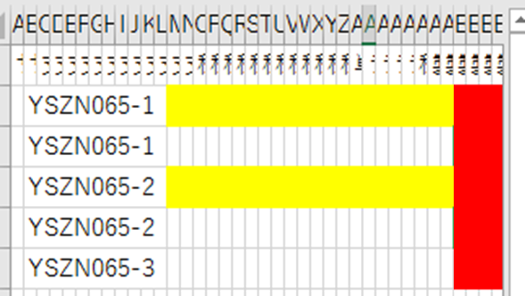

多変量データ自動分類プロット『Simple Clustering Plot』
多変量データ自動分類プロット『Simple Clustering Plot』 - 目次
- 概要
概要
Simple Clustering Plot（SC Plot）は、多変量な実験・シミュレーションデータを扱う研究開発向けに開発されたデータプロットツールです。
実験条件、計測値が同じもしくは類似したもので、データを分類（グループ化）して、同一グループを同じプロットマーカーにしたグラフ作成が可能であり、多変量データの傾向、依存性の分析を強力に支援します。
Simple Clustering Plotコンセプト
研究開発現場において、実験結果の傾向分析を行う場合、様々な実験結果を実験条件が一定のものごとにまとめ、それらを同じマーカーとして、プロットを作成するケースが多々あります。通常のデータプロットツールでは、データは2次元表形式に記録し、プロットのマーカー種別が列（もしくは行）ごとに決まってしまうので、実験条件が一定のものごとに同一列にデータを集めた2次元表を作る必要があります。また、異なる観点の条件が一定のものだけのプロットを作成する場合、2次元表の再作成が必要になり、非常に手間がかかると同時に、作業間違いの混入リスクも無視できません。
SC Plotは、データの2次元表を変更することなく、一定にしたい（グループ化したい）条件を指定するだけで、指定された複数の実験条件が一定のものごとにマーカー種別を自動的分類し、プロットを自動的に作成することができます。なお、SC Plotは、Visual Studio Tools for Office (VSTO)によるAdd-inとして開発されていますので、通常のExcelの機能も併用して分析することができます。
『Simple Clustering Plot』は、多変量データの解析を効率化することにより、研究開発を支援します。
◆ 『Simple Clustering Plot』の主な特長- 自動分類プロット機能
-
多変量な実験データを自動的に分類プロットできます。分類する配合剤や実験条件を指定することで、パターンごとにグループ化してプロットします。これにより、データ分析が簡単になります。
- グループ別グラフ作成機能
-
プロット数が多い時には、設定一つでグループごとにグラフを分けてプロットすることもできます。特定の配合剤や実験条件のセットでの結果を確認するために利用できます。
- 画像埋め込み機能
-
画像ファイルのある場所をファイルパスやURLでセルに入力しておけば、ボタン一つでセルの大きさに合わせた画像を表示することができます。画像をリンクする方法と、実ファイルを埋め込む方法が選択できます。
- ハイパーリンク設定、変更機能
-
画像ファイル以外についても、ファイルパスやURLが入力されていれば、ボタン一つでハイパーリンク化することができます。これにより、ファイルを簡単に取得できるようになります。
また、パスが変更された場合は、変更前後の文字列を指定するだけで、ハイパーリンクを有効にしたまま、一括でパスを変換することができます。
- グラフ特定機能
-
SC Plot内に複数のグラフが作成されている時、ボタン一つで所望のグラフの位置に移動して表示する機能です。多くのグラフの中から必要なグラフを探すときに便利です。
- グラフ内プロットのデータセル特定機能
-
グラフ内のプロット点に対してデータを確認したい場合、プロット点をクリックすると、そのデータのセルが選択され、自動的に移動します。移動にはグラフもついてきますので、グラフのプロットデータ詳細をを確認するのが便利になります。
プロットにラベルを表示する機能を併用すると、興味のあるデータを選択して表示することも可能です。
- 列開閉機能
-
各データの項目数が多い場合、指定した複数列を開閉するアクションをボタンとして設定することにより、ボタン一つで必要な項目の列のみを表示することができます。
-
例えば、緑色と青色を開閉する列開閉ボタンを定義しておけば、その開閉ボタンをクリックすることで緑色と青色の列を非表示にできます。
-
さらに、行方向にエクセルのフィルターをかけることで、空白行を閉じた表示にすることができ、必要な項目の必要なデータ部分だけをコンパクトに表示することが容易に実現できます。
- 時系列ファイル比較グラフ作成機能
-
外部で管理しているCSV形式の時系列データを取り込み、グラフを作成することができます。
測定機器などが出力するファイルを実験データと紐づけて管理している場合、そのデータをグラフ化する際に有効です。
フォーマットがそろっていれば時系列以外のデータでも構いません。
-
例えば、上図のように、CSV形式の時系列データのファイルパスをセルに入力しておけば、ボタン一つでファイル毎にシートを作成して取り込むことができます。
-
取り込んだ複数のCSVファイルのデータをまとめたグラフを描画することにより、それぞれの時系列データを比較できます。
- 時系列項目比較グラフ作成機能
-
1つの時系列データを1行で入力しているデータから、複数の時系列データの比較グラフを作成することができます。
実験ノートやExcelに記載して管理している測定結果をグラフ化する際に有効です。
-
時系列データを規則的な項目名で整理して1行ごとに登録している場合、その規則性を設定して別シートに切り出し、行ごとに表形式の時系列データシートを作成できます。
-
作成した複数の時系列データをまとめたグラフを描画することにより、それぞれの時系列データを比較できます。
- X軸が文字列の項目の場合のグラフ作成機能
-
実験データでグラフを作り、分析をする場合、文字列（試料ID、基盤材料など）をX軸として散布図を作成したい場合がありますが、一般的に数値以外を軸にして散布図を作成することはできません。
-
SC Plotでは、項目値が文字列である項目をX軸にしてグラフを作成するときに、項目値が文字列である項目を整数化した項目を自動的に作成し、その項目を軸として散布図を作成することができます。これにより、X軸が文字列でもSC Plotの機能を生かした分析が可能になります。


ナビゲーション
- 製品情報
- 簡易実験データベース『Simple Experiment DB』
- 多変量データ自動分類プロット『Simple Clustering Plot』
- デジタルラボノート 『R&D FormPat』
- エンジニアリングデータ管理システム 『ASNARO』
- CAE 社内クラウドシステム 『CAE クラウド』
- 3次元リアルタイム磁場解析ソルバシステム 『Qm』
- 研究フロー統合管理システム 『RCM』
- その他
- サービス
- 会社情報
- 採用情報
- お問い合わせ